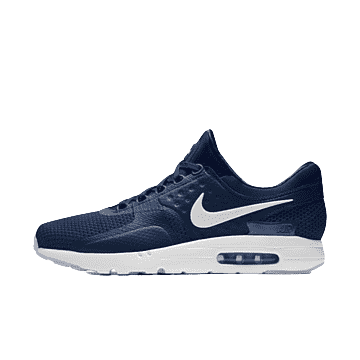
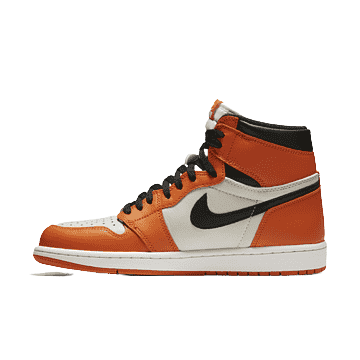
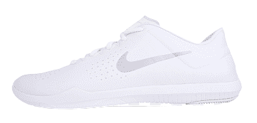

The Nike Air Force 1 is introduced in another new colorway. Flaunting a premium makeup as well, the model bears a breathable mesh build for its side panels while tumbled and smooth leather comprises the rest of its majority.
Buy Now

$198
Genuine Leather is a natural material from animals and therefore differs from hide to hide. Whereas Synthetic Leather are treated and reacts differently during coloring and tanning process, to replicate these textures of a Genuine Leather.
Buy Now

$185
The Air Jordan 1 “Lost and Found” in the iconic “Chicago” colorway pays homage to the sneaker craze in the mid-'80s. The high-top icon with MJ's classic red, white, and black colorway comes with a slightly “cracked” look, nodding to forgotten pairs discovered after a long time.
Buy Now$187
The Air Jordan 1 “Lost and Found” in the iconic “Chicago” colorway pays homage to the sneaker craze in the mid-'80s. The high-top icon with MJ's classic red, white, and black colorway comes with a slightly “cracked” look, nodding to forgotten pairs discovered after a long time.
Buy Now$168
Genuine Leather is a natural material from animals and therefore differs from hide to hide. Whereas Synthetic Leather are treated and reacts differently during coloring and tanning process, to replicate these textures of a Genuine Leather.
Buy Now$140
The Air Jordan 1 “Lost and Found” in the iconic “Chicago” colorway pays homage to the sneaker craze in the mid-'80s. The high-top icon with MJ's classic red, white, and black colorway comes with a slightly “cracked” look, nodding to forgotten pairs discovered after a long time.
Buy Now$235
The Air Jordan 1 “Lost and Found” in the iconic “Chicago” colorway pays homage to the sneaker craze in the mid-'80s. The high-top icon with MJ's classic red, white, and black colorway comes with a slightly “cracked” look, nodding to forgotten pairs discovered after a long time.
Buy Now

$188
Genuine Leather is a natural material from animals and therefore differs from hide to hide. Whereas Synthetic Leather are treated and reacts differently during coloring and tanning process, to replicate these textures of a Genuine Leather.
Buy Now$146
The Air Jordan 1 “Lost and Found” in the iconic “Chicago” colorway pays homage to the sneaker craze in the mid-'80s. The high-top icon with MJ's classic red, white, and black colorway comes with a slightly “cracked” look, nodding to forgotten pairs discovered after a long time.
Buy Now